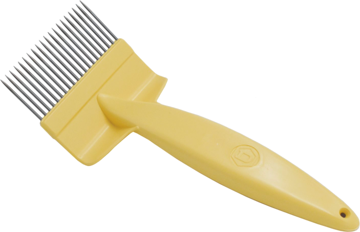
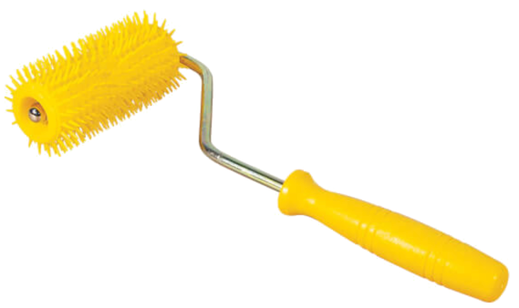
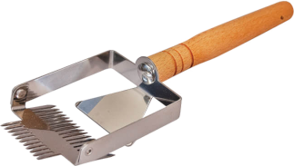
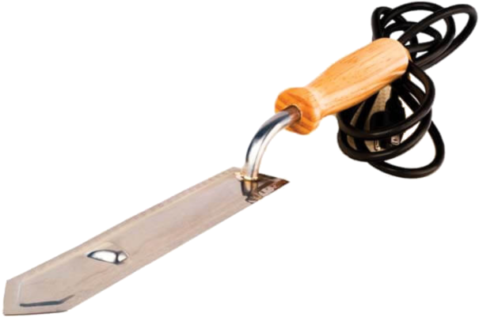
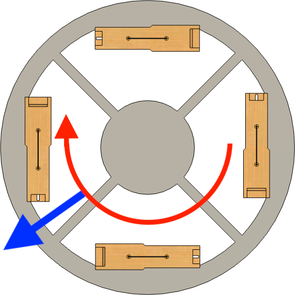
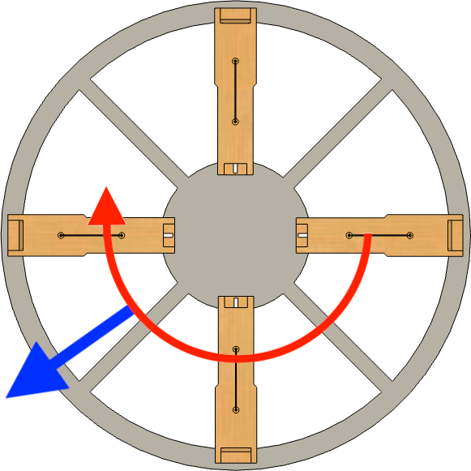
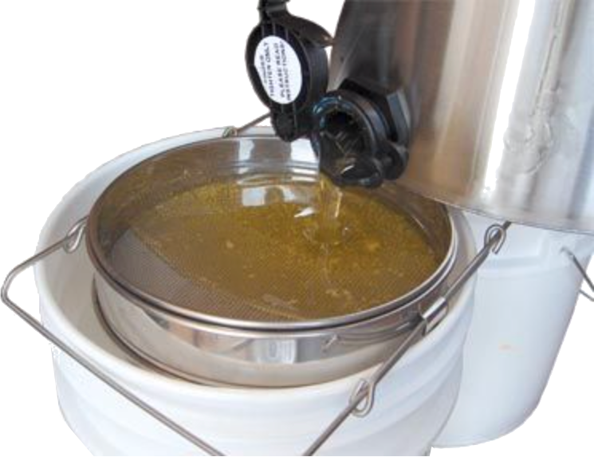
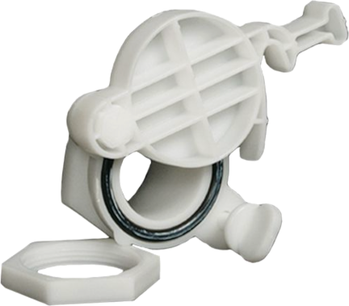
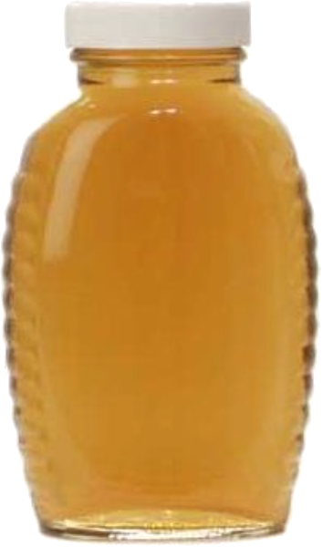

Overview
Harvesting honey can be done a number of ways. The ones I hear about most often are:
- Extraction
- Crush & Strain
This article covers notes about extraction.
There are alternatives to using an extractor:
- Flow Hive. This is a different type of honey super which is reported to work well by those who have them.
- Crush & Strain. I've always thought crush & strain approach is a waste of the work done by the bees; others don't agree. There is a link at the bottom of this page with more information about the crush & strain method.
- Gravity method. This is slow, but does work.
- Cut comb.
|
|
Step 1: Selecting the frames for harvesting the honey
In general, you should only take honey frames from the honey supers. The honey frames in the brood chamber should be left for the bees: they will need it to get thru winter.
There are exceptions to this rule though. One exception is for the colony which has collected so much nectar that the brood chamber is honey-bound and the queen has no more space to lay eggs.
The frames you take should be:
- Completely capped, or at least have very few uncapped cells.
- Free from larva cells. If there are a few capped larva cells, You can either:
- Remove these larva when you are in step 3, or
- Move the frame to a hive box above the queen excluder, and wait for the brood to hatch out.
|
|
Step 2: Getting the honey frames into the extraction area
For this step, you can take an active approach or a passive one. The passive step is to use something like a bee escape board. That approach is addressed in the linked page. This page covers the active approach.
I recommend you bring an empty hive box with you to the apiary when you do this activity. Put this box away some distance from you. Be sure to put it on a flat surface which prevents bees or pests from accessing the box from the bottom. The ground is not acceptable for this.
You need to remove the bees from the frames from which you are going to extract honey. You can shake some of the bees off, but you will need to brush the remaining bees off. Then put this frame in the empty hive box, and put a cover over it. As with the bottom, this needs to stop bees from entering the box from the top.
|
Additional Note One beekeeper recommended that you wait until evening to proceed with step 3. His reasoning is that the bees are back in their hive for the night, and less likely to bother you. |
|
|
Step 3: Uncapping the honey
|
Recommendation Get a two buckets ready before starting: one with warm, soapy water, and one with warm rinse water. This will come in handy as you do your work. |
To uncap the honey cells, you can use a number of tools. Some very popular ones are outlined below.
|
 Cappings Scratcher Image courtesy Dadant Cappings scratcher (also known as an uncapping fork) This tool works, and is a very low cost tool for this purpose. Just be sure to not dig too deep into the cells. |
 Uncapping roller Image courtesy BetterBee Uncapping roller This tool works, and is a very low cost tool for this purpose. The idea for this tool is that it pokes holes in the cell caps rather than removing the cap. I have used this, but I’m not a big fan. |
|
 Pull Style Uncapping Scratcher Image courtesy BetterBee Pull style uncapping scratcher This is my favorite tool. It also works well and is a low cost tool for this purpose. |
 Uncapping Knife Image courtesy BetterBee Uncapping Knife This tool works well, but is a bit more expensive than the other tools. The beekeepers who use it best have figured out how to manage the knife's heat, even unplugging it if the tool is not needed for a short time. There are heated and unheated versions of these. I have not used either so I cannot speak to the advantages or disadvantages. |
As you uncap the frame,
- You should do this activity over a pan large enough to capture the honey which will drip out of the uncapped cells.
- Have a place to put the wax cappings you remove.
- Keep a tool like a scraper on hand. This will be needed to remove the wax from the uncapping tools.
|
Additional Note To clean the honey from the wax in the cappings, you can put the collected materials in a pan and set them out for the bees to clean up for you. Just do not do this too close to your apiary: it will encourage robbing of your hives. |
|
|
Step 4: Extracting the honey
You can set the frames up to drip out, but that takes a long time.
Instead, a centrifugal extractor is recommended. Such a tool can be purchased from many sources, or check with your beekeeping club: They will probably have one you can rent.
|
 Tangential Extractor |
 Radial Extractor |
The pictures above depict two different 4-frame extractors: one tangential; one radial.
- The red arrows depict the rotation of the extractor to spin the honey out of the frames.
- The blue arrows depict the centrifugal force pulling against the frame (and thusly the honey in the frame).
If you purchase one, consider getting a radial one. They are easier to use as you do not have to flip the frames, and they are less likely to damage the comb. (There is a link below to Grandpa's Honey, describing radial vs. tangential extractors.)
|
Additional Note After you have extracted the honey, those frames are still wet with residual honey. It is a good idea to put them back on the hive in a honey super to let the bees clean them out. Also, as this is comb which has been drawn out and the bees will get busy refilling the cells. I try to put the frames back onto a hive the next day. This minimizes the risk of pests getting into the frames. |
|
|
Step 5: Filtering the honey

Double Honey Filter
Image courtesy Dadant
Once the honey has been extracted, it needs to be filtered. Filtering removes the wax caps, bee parts, and other stuff which you'd rather not have in your bottled honey.
The picture to the right shows a typical, stainless steel, double filter set atop a food grade bucket. This one has filters with 1000 and 500 micron mesh. The first one used is the 100 micron, which then drips into the 500 micron mesh.
There are plastic filters available also. These commonly come in 600, 400, and 200 micron mesh sizes. If using these, use them in decreasing size of microns (openings in the filter): 600, then 400, then 200.
|
|
Step 6: Collecting the filtered the honey

Honey Gate
Image courtesy Dadant
The filtered honey is then collected in a food-grade bucket. Do not use buckets from the hardware store -- they are not food-grade and may have chemicals in them you would rather not have in your honey (or may be illegal to be in food). Food grade buckets are available from most beekeeping suppliers.
Buckets are available with or without a honey gate (also known as a scissor gate). Honey gates are used when you want to fill bottles from the bucket's content. They make this process much easier.
If you are not filling the bottles soon after the extraction, I recommend you filter the honey into a bucket which does not have a honey gate. These gates are not leak-proof, and will most surely leak. Not only will you lose honey, but you will have a mess to clean up also.
|
|
Step 7: Bottling the honey

Queenline Jar
Image courtesy
Dadant
Honey can be put into many different types of containers. The little bear container is cute, but it will not differentiate you from the honey sold at the grocery store. Plus, they are plastic.
Glass is preferable. Glass looks and feels more substantial and presents you as more professional. Additionally, if you need to heat the honey to de-crystalize it, this is much easier to do if the container is glass.
|
Additional Notes
|
|
|
Step 8: Cleaning Up Everything
All the honey-extraction equipment needs to be cleaned after use. Use soapy warm water, and rinse everything well. A pressure washer makes short shrift of this endeavour.
Make sure it is dry when you put it away. You don’t want to encourage the growth of mold.
There are some who advocate not using soap when cleaning. They say that the soap can leave a residual flavoring. I am not in that group; instead I recommend you rinse everything well.
More Information
Web Sites
- First Year Honey Extraction Equipment, by Backyard Beekeeping
- Honey Extractors Explained, by Backyard Beekeeping
- Honey Harvest, by Bush Bees
- How To Crush And Strain Honey, by Bee Professor.
- Make a DIY Honey Extractor, by Backyard Beekeeping. Note: I have no experience with this, and would urge you to look to your local beekeeping club to see if they have an extractor they loan out to members.
- What Is A Honey Extractor?, by Bee Professor
- Which Is Better: Radial Or Tangential Honey Extractor?, by Grandpa's Honey
Presentations
- How To Use A Honey Extractor - Practical 6-Step Beginner's Guide (YouTube video), by Bee Professor.